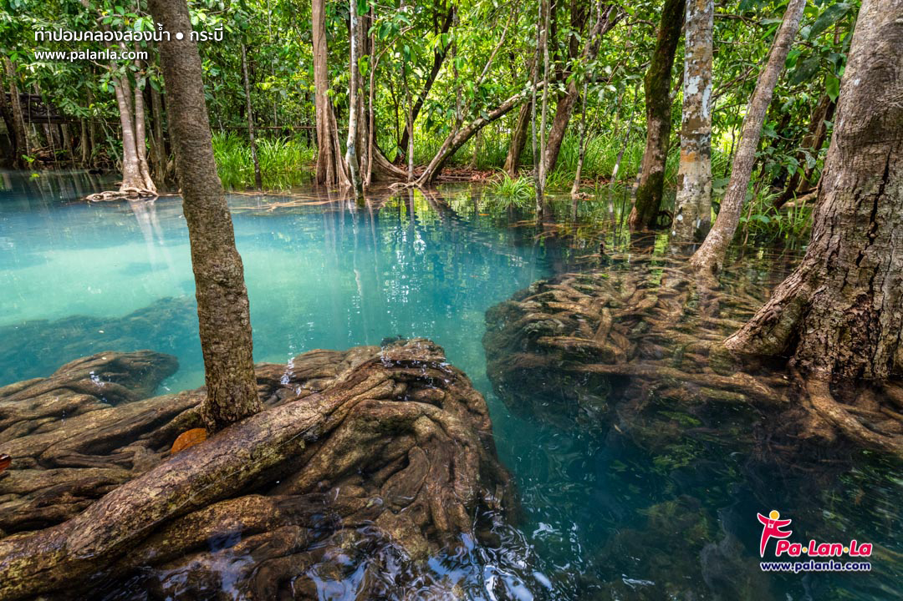
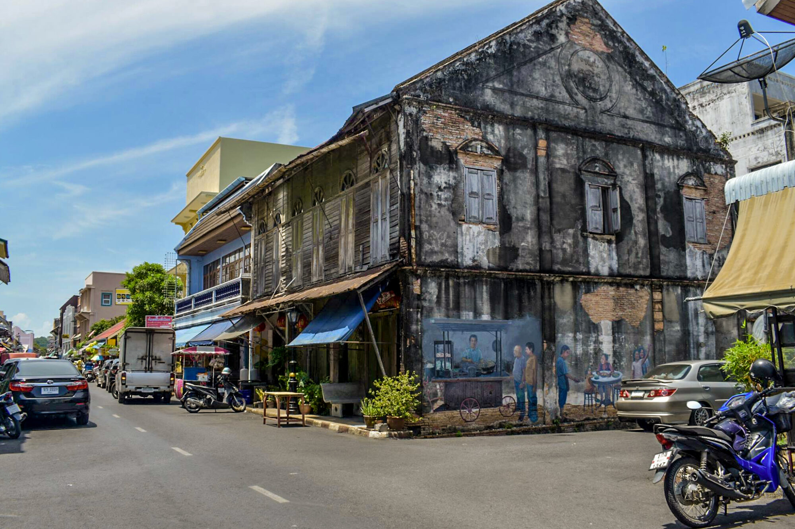
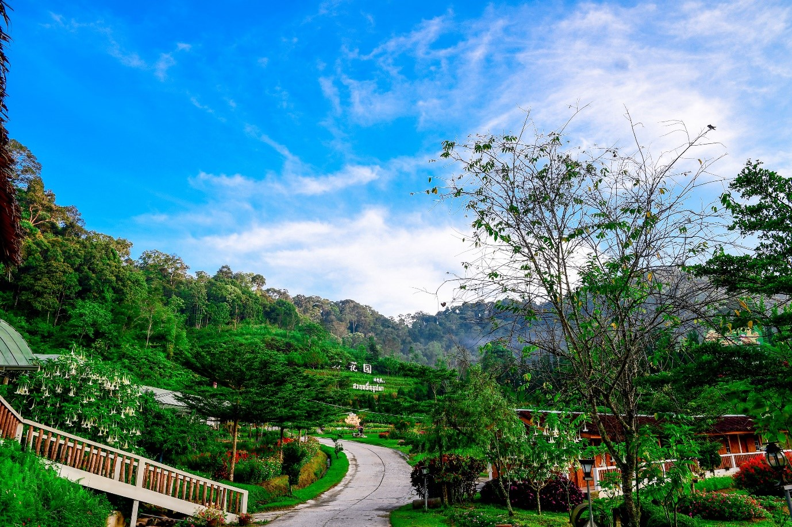

ภาคใต้




สถานที่ท่องเที่ยวของภาคใต้
หาดป่าขาว จังหวัดภูเก็ต
เป็นชายหาดที่มีความเงียบสงบ ชายหาดแห่งนี้จะทอดยาวไปจนถึงหาดทรายแก้ว รวมระยะทาง เกือบ 10 กิโลเมตร เรียกว่ายาวที่สุดของจังหวัดภูเก็ต และจากจุดนี้เราสามารถมองเห็นเครื่องบินขึ้นลงได้อย่างชัดเจน เป็นจุดแลนดิงของสนามบินที่สวยงามไม่แพ้ที่ใดในโลก นับเป็นที่เที่ยวภาคใต้ที่ไม่ควรพลาด
ท่าปอม คลองสองน้ำ จังหวัดกระบี่
เป็นแหล่งท่องเที่ยวกระบี่ที่ดูแลโดยคนในพื้นที่ มีสิ่งอำนวยความสะดวกทั้งที่จอดรถ ที่เที่ยวภาคใต้แห่งนี้จึงเต็มไปด้วยความสมบรูณ์ของธรรมชาติ และที่สำคัญน้ำที่นี่ใสมากจนเห็นพื้นน้ำด้านล่าง เป็นความพิเศษอย่างหนึ่งของที่เที่ยวใต้แห่งนี้
สวนดอกไม้เมืองหนาวเบตง จังหวัดยะลา
สวนดอกไม้เมืองหนาวแห่งนี้ เป็นโครงการในพระราชดำริของสมเด็จพระเทพรัตนฯ พื้นที่โครงการแบ่งออกเป็น สวนหมื่นบุปผา ซึ่งมีศาลานั่งพัก เดินเล่นในอากาศเย็นได้เพลิดเพลิน แปลงทดลองการปลูกพืชผัก แปลงดอกไม้กลางแจ้ง แปลงดอกไม้ในโรงเรือน พันธุ์ไม้ที่นี่มีให้ชมหลากหลายชนิด ที่เที่ยวภาคใต้แห่งนี้ยังเป็นสวนดอกไม้เมืองหนาวแห่งเดียวในภาคใต้อีกด้วย
ที่อยู่ของสวนดอกไม้เมืองหนาวเบตง
ที่อยู่ : หมู่บ้านปิยะมิตร 2 หมู่ 2 ต.ตะเนาะแมเราะ อ.เบตง จ.ยะลา
โทร 061 654 1519
ค่าเข้าชมคนละ 40 บาท
พิกัด
ที่อยู่ : หมู่บ้านปิยะมิตร 2 หมู่ 2 ต.ตะเนาะแมเราะ อ.เบตง จ.ยะลา
โทร 061 654 1519
ค่าเข้าชมคนละ 40 บาท
พิกัด